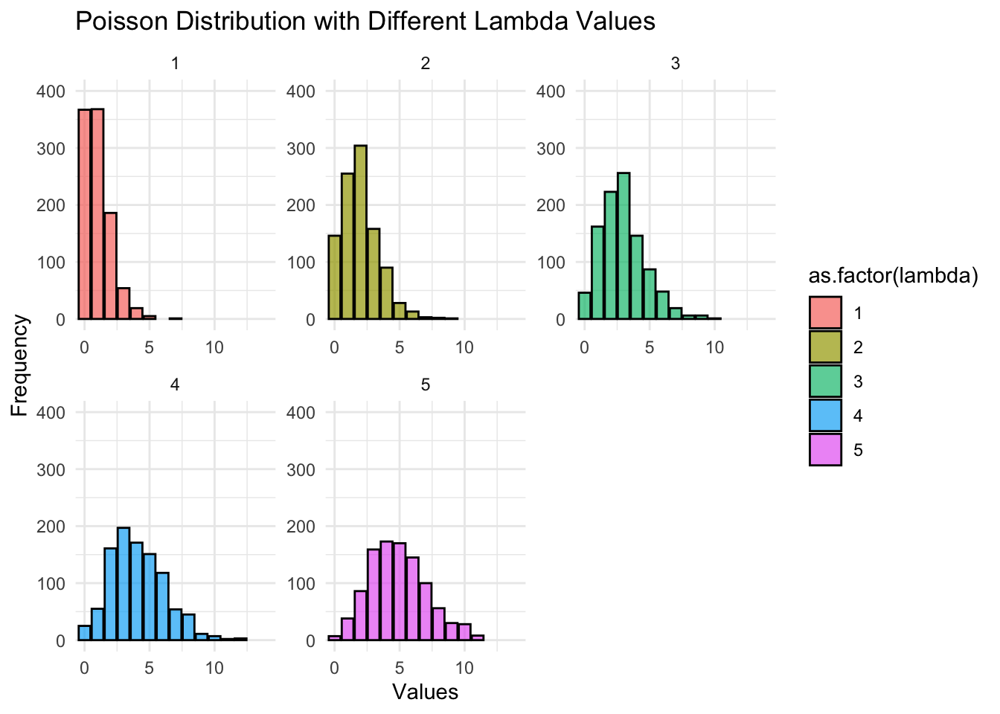

Package loaded. To attach the GSS data, type data(gss_all) at the console.
For the codebook, type data(gss_doc).
For the panel data and documentation, type e.g. data(gss_panel08_long) and data(gss_panel_doc).
Create a logistic regression model predicting some binary variable. Use the performance_hosmer() function from the performance package to asses how well the model is fitting.
Outcome: does respondent have HS degree? Predictors: Does mom have HS degree? Does dad have HS degree? How many siblings does R have? What is R’s political view?
data_11_1_1<- d |>mutate(hs_degree =if_else(degree >=2, T, F), dad_hs_degree =if_else(padeg >=2,T,F), # does dad have hs degree?mom_hs_degree =if_else(madeg >=2, T, F), # does mom have hs degree?sibs =as.numeric(sibs), # number of siblingspolviews =as.factor(polviews) # respondent's political views ) |>select(hs_degree,dad_hs_degree,mom_hs_degree,sibs,polviews) |>drop_na()log_reg_11_1_1<-glm(hs_degree ~ dad_hs_degree + mom_hs_degree + sibs + polviews, family ="binomial", data = data_11_1_1)summary(log_reg_11_1_1)
Call:
glm(formula = hs_degree ~ dad_hs_degree + mom_hs_degree + sibs +
polviews, family = "binomial", data = data_11_1_1)
Deviance Residuals:
Min 1Q Median 3Q Max
-1.9648 -0.9315 -0.7634 1.0923 2.3077
Coefficients:
Estimate Std. Error z value Pr(>|z|)
(Intercept) -0.05239 0.25190 -0.208 0.835255
dad_hs_degreeTRUE 0.97915 0.14023 6.982 2.90e-12 ***
mom_hs_degreeTRUE 0.84673 0.13741 6.162 7.18e-10 ***
sibs -0.07891 0.02173 -3.630 0.000283 ***
polviews2 -0.07967 0.28329 -0.281 0.778531
polviews3 -0.32125 0.28703 -1.119 0.263042
polviews4 -0.56542 0.25591 -2.209 0.027143 *
polviews5 -0.42256 0.28351 -1.490 0.136109
polviews6 -0.19818 0.27239 -0.728 0.466879
polviews7 -0.42695 0.34724 -1.230 0.218862
---
Signif. codes: 0 '***' 0.001 '**' 0.01 '*' 0.05 '.' 0.1 ' ' 1
(Dispersion parameter for binomial family taken to be 1)
Null deviance: 2189.3 on 1590 degrees of freedom
Residual deviance: 1972.4 on 1581 degrees of freedom
AIC: 1992.4
Number of Fisher Scoring iterations: 4
performance_hosmer(log_reg_11_1_1)
# Hosmer-Lemeshow Goodness-of-Fit Test
Chi-squared: 7.397
df: 8
p-value: 0.495
Summary: model seems to fit well.
Why are larger p-values an indication of good fit here?
The Hosmer-Lemeshow test is a statistical test used for logistic regressions to assess how well the predicted probabilities from a model match the observed outcomes. The test divides the predicted probabilities into several groups and compares the observed frequencies with the expected frequencies in each group.
A large \(X^2\) value with a small p-value shows that there is a significant difference between the observed value and predicted value, indicating a poor fit of the model. A low \(X^2\) value with a large p-value shows that the predicted value and observed value is very close, therefore the model is a good fit.
11.1.2 Exercise
Do a "link test" on the same model. What is the\(\beta\)coefficient? What does it mean in terms of goodness of fit?
data_11_1_1$predict_log_odds_hs_degree<-predict(log_reg_11_1_1)log_reg_11_1_1_link <-glm(hs_degree ~ predict_log_odds_hs_degree, data = data_11_1_1, family =binomial(link ="logit"))tidy(log_reg_11_1_1_link)
The \(\beta\) value of 1.0 implies that for a one-unit increase in predict_log_odds_hs_degree, the log-odds of hs_degree being true increases by 1 (i.e. the probability of the respondent having a high school degree increases by \(e^\beta=\) 2.718). In practice, this means that the model is a good fit.
11.2.1 Exercise
Use the rpois() function to generate 1000 draws from the Poisson distribution for different values of \(\lambda\) (e.g., 1, 2, 3, 4, 5). Plot the results using ggplot.
lambda_values <-c(1, 2, 3, 4, 5)draws <-lapply(lambda_values, function(lambda) rpois(1000, lambda))data <-data.frame(value =unlist(draws),lambda =rep(lambda_values, each =1000))ggplot(data, aes(x = value, fill =as.factor(lambda))) +geom_bar(position ="identity", alpha =0.7, color ="black") +facet_wrap(~lambda, scales ="free") +coord_cartesian(xlim =c(0, 14), ylim =c(0,400))+labs(title ="Poisson Distribution with Different Lambda Values",x ="Values",y ="Frequency") +theme_minimal()

11.2.2 Exercise
Create at least three models that predict numtot (the sum of male and female sexual partners) from a subset of predictors. Keep it simple.
df_11_2_2 <- d |>mutate(age =as.numeric(age),male =ifelse(sex ==1, 1L, 0L),weekly =if_else(attend >=7, 1L, 0L),conservative =if_else(polviews >=5, 1L, 0L),sex_orientation =as.factor(case_when( sexornt ==1~"gay", sexornt ==2~"bi", sexornt ==3~"straight" )),sex_orientation =relevel(sex_orientation, ref ="straight") ) |>select(numtot, age, male, weekly, conservative, sex_orientation) |>drop_na()numtot_m1 <-glm(numtot ~ age + male, data = df_11_2_2, family ="poisson")numtot_m2 <-glm(numtot ~ sex_orientation, data = df_11_2_2, family ="poisson")numtot_m3 <-glm(numtot ~ age + male + weekly + conservative + sex_orientation,data = df_11_2_2, family ="poisson")msummary(list(numtot_m1, numtot_m2, numtot_m3), output ="gt") |>opt_table_font(font ="Optima")
(1)
(2)
(3)
(Intercept)
3.136
3.441
3.020
(0.016)
(0.005)
(0.016)
age
0.004
0.003
(0.000)
(0.000)
male
0.247
0.246
(0.010)
(0.010)
sex_orientationbi
0.036
0.235
(0.027)
(0.027)
sex_orientationgay
0.293
0.475
(0.029)
(0.029)
weekly
-0.048
(0.013)
conservative
0.408
(0.011)
Num.Obs.
1238
1238
1238
AIC
183195.0
183907.5
181606.2
BIC
183210.4
183922.8
181642.0
Log.Lik.
-91594.505
-91950.731
-90796.096
F
405.177
52.468
407.817
RMSE
145.58
145.64
145.42
Choose the one that fits the data best using AIC and BIC.
numtot_m3 fits the data the best based on both its AIC and BIC scores, which are lower than the AIC and BIC scores for numtot_m1 and numtot_m2 . numtot_m3 is the most complicated model, with the most number of predictors included.
Interpret at least one of the coefficients in the model that’s not the intercept.
In numtot_m1, the male predictor variable = 1 if the respondent is male and = 0 if the respondent is not male. The \(\beta\) of 0.247 means that male respondents are predicted to have \(e^\beta\) = 1.280179 more sexual partners than non-male respondents.
11.2.3 Exercise
Create at least three models that predict sibs (the respondent’s number of siblings) from a subset of predictors. Keep it simple.
df_11_2_3 <- d |>mutate(age =as.numeric(age),male =ifelse(sex ==1, 1L, 0L),weekly =if_else(attend >=7, 1L, 0L),conservative =if_else(polviews >=5, 1L, 0L),sex_orientation =as.factor(case_when( sexornt ==1~"gay", sexornt ==2~"bi", sexornt ==3~"straight" )),sex_orientation =relevel(sex_orientation, ref ="straight") ) |>select(sibs, numtot, age, male, weekly, conservative, sex_orientation) |>drop_na()sibs_m1 <-glm(sibs ~ age + conservative, data = df_11_2_3, family ="poisson")sibs_m2 <-glm(sibs ~ male + weekly, data = df_11_2_3, family ="poisson")sibs_m3 <-glm(sibs ~ age + male + weekly + conservative + sex_orientation + numtot,data = df_11_2_3, family ="poisson")msummary(list(sibs_m1, sibs_m2, sibs_m3), output ="gt") |>opt_table_font(font ="Optima")
(1)
(2)
(3)
(Intercept)
0.987
1.195
1.033
(0.046)
(0.023)
(0.049)
age
0.004
0.004
(0.001)
(0.001)
conservative
-0.019
-0.033
(0.034)
(0.035)
male
-0.105
-0.109
(0.032)
(0.032)
weekly
0.119
0.097
(0.038)
(0.039)
sex_orientationbi
-0.028
(0.087)
sex_orientationgay
-0.004
(0.105)
numtot
0.000
(0.000)
Num.Obs.
1237
1237
1237
AIC
5621.8
5620.3
5612.0
BIC
5637.2
5635.7
5652.9
Log.Lik.
-2807.899
-2807.171
-2797.976
F
10.133
10.907
5.766
RMSE
2.49
2.49
2.48
Choose the one that fits the data best using AIC and BIC.
Based on AIC, sibs_m3 fits the data the best (i.e. its AIC is the lowest). Based on BIC, though, sibs_m2 fits the data the best (i.e. its BIC is the lowest). BIC tends to penalize complex models more than AIC, so this makes sense because sibs_m3 contains the most predictor variables.
Interpret at least one of the coefficients in the model that’s not the intercept.
In sibs_m1 and sibs_m3, the \(\beta\) for the age variable (0.004) indicates that for every 1-step increase in the respondent’s age, the number of siblings the respondent will report increases by \(e^\beta\) = 1.004008.